按课程顺序整理的官方资源和图示。图片均来自 SketchUp 官方帮助中心和官方 SketchUp for Schools 教案，每张都标了出处。点图片可查看原图。
新建模型时选 Architectural（建筑）· Millimeters 模板，单位就是毫米，后面输入 3000 就是 3 米。也可以在偏好设置里把它设为默认模板。
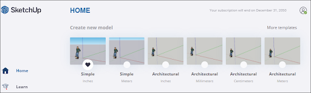
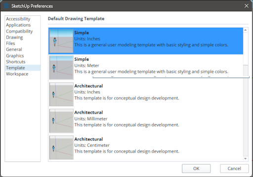
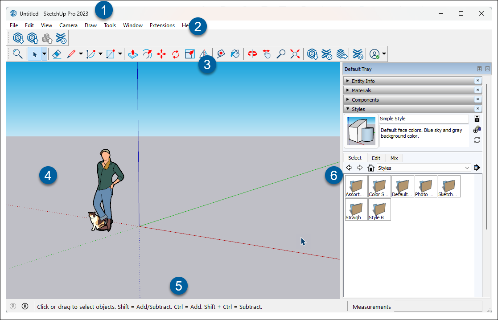
这两样是课上要指给学生看的“软件自带的老师”。Mac 上打开工具向导：顶部菜单 窗口 → Instructor（工具向导），它会作为一个独立小窗口出现，选中任何工具就显示该工具的动画和用法。
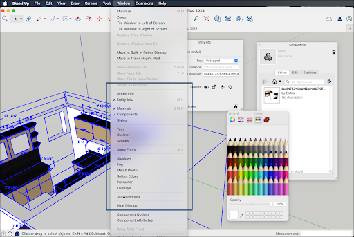
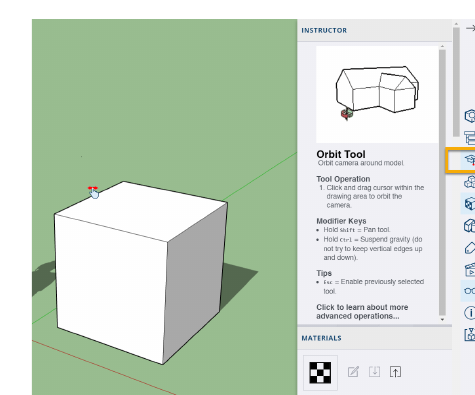
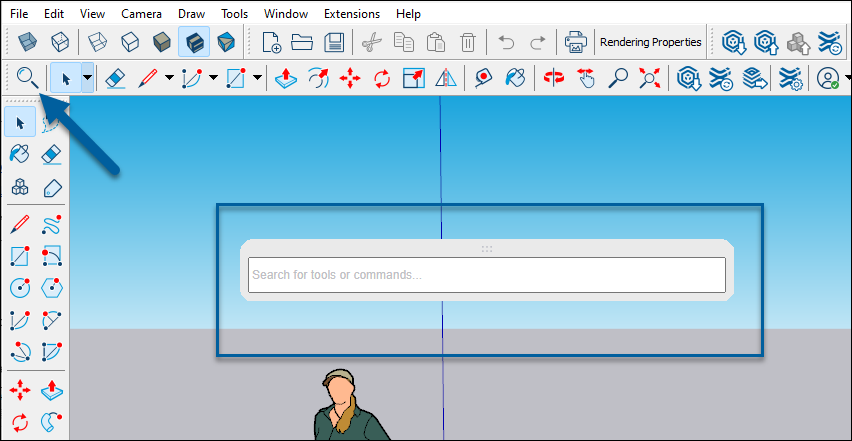
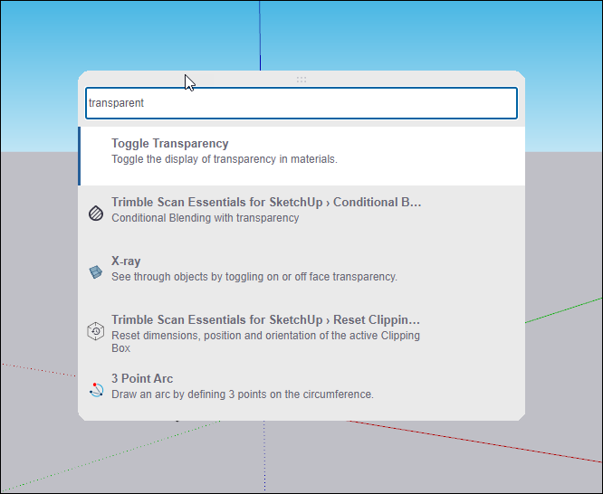
顺序对应课上的演示：推断点 → 线 → 面 → 分割 → 推拉成体 → 推穿开洞 → 建组。可以照着这些图在 SketchUp 里做演示模块。
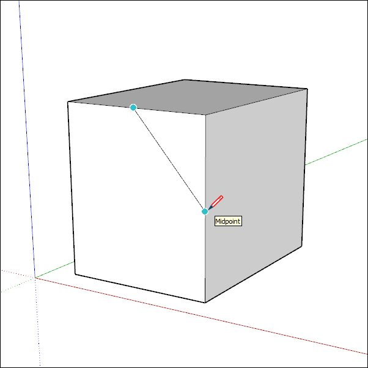
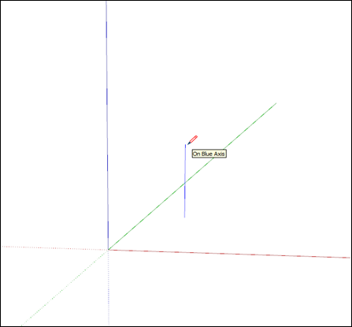
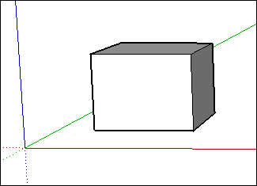
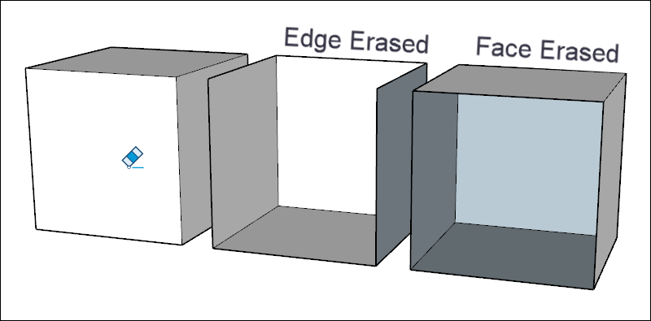
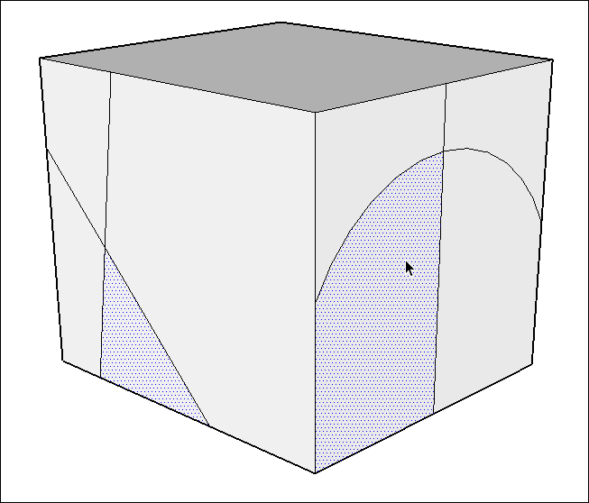
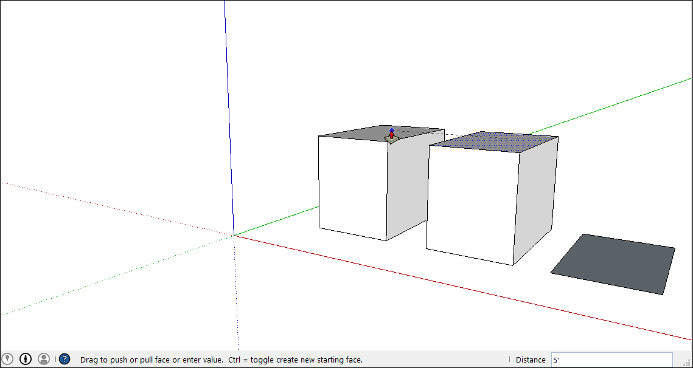
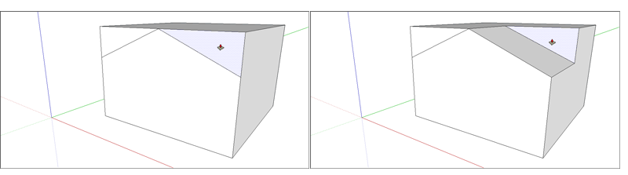
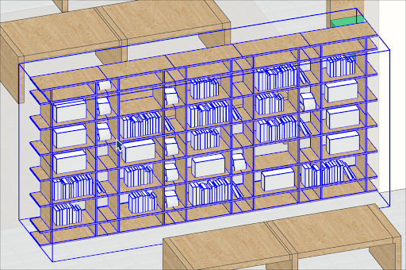
环绕、平移、移动三张是官方 GIF 动图，可以直接放进 PPT。鼠标操作：按住滚轮拖动是环绕，Shift + 按住滚轮是平移，滚动滚轮是缩放（据小木屋教案）。
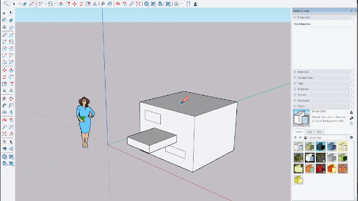
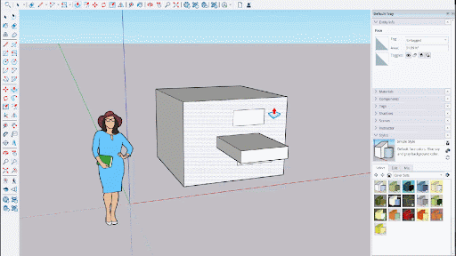
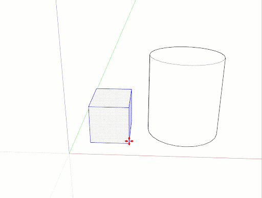
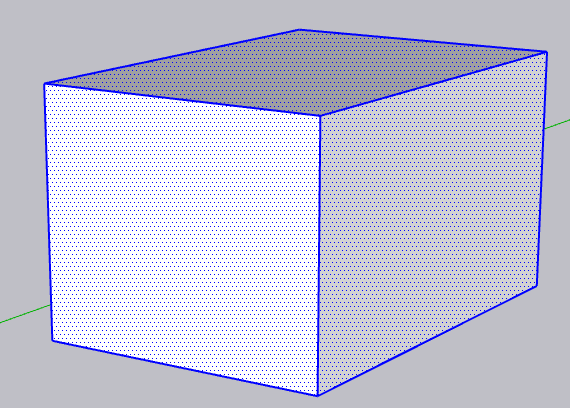
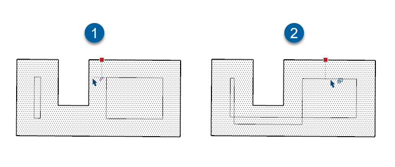
官方 SketchUp for Schools 初级课「Design Your Own Cabin」，标注时长 45 分钟，共 22 页，每一步都有截图。教案用英制尺寸和网页版界面，课上换成毫米模板即可。
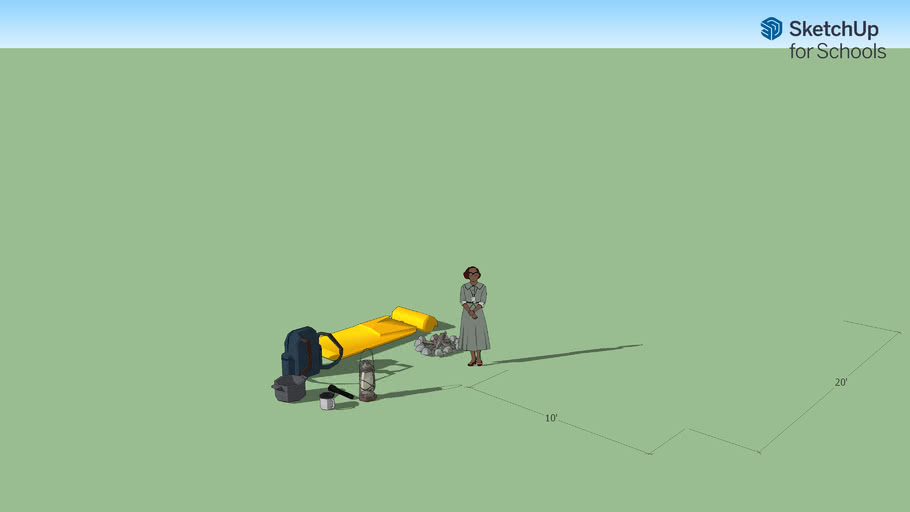
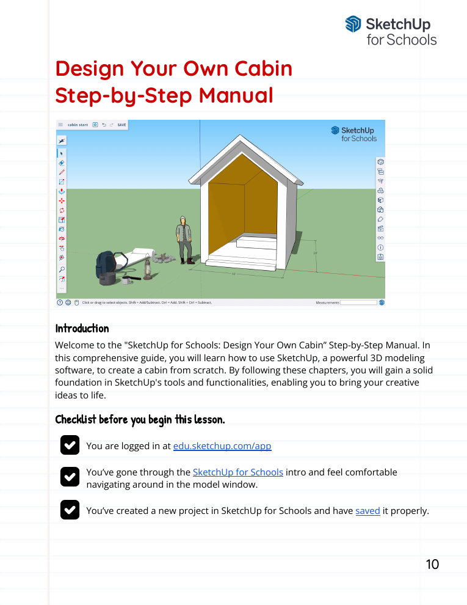
官方原来的 SketchUp Campus 已经并入 Trimble Learn，现在的基础课是下面五门。前两门的时长和内容是我打开课程页确认过的，后三门只核对了名称。
| 课程 | 内容 | 时长 |
|---|---|---|
| Fundamentals 1 · 入门 | 界面、新建文件、导航（缩放/平移/环绕）、托盘与右键菜单、相机、比例人、测量、偏好设置 | 约 2 小时 |
| Fundamentals 2 · 几何建模 | 项目设置、二维几何、精确建模、推拉、移动变换、阵列、卷尺、选择管理 | 约 11 小时 |
| Fundamentals 3 · 可视化 | Exploring Visualization 待验证 | — |
| Fundamentals 4 · 组织 | Organization Essentials 待验证 | — |
| Fundamentals 5 | SketchUp Enablement 待验证 | — |